De op de natuur aangepaste analyse
Wat er gebeurt met de Nederlandse cascade wanneer twee equatoriale biomassa-sporen Brussels klimaatbeleid vervangen — en hoe waterstof zich verhoudt tot beide
Door Jacobus van Merksteijn · Malta, juni 2026
Dit stuk is geen aanval. Geen oproep. Geen poging u over te halen.
Het legt drie technologische routes op tafel, en rekent door wat zij doen met de Nederlandse cascade. BiCRS (een product van Carbon-Alert Ltd) en ethanol als equatoriale alternatieven, waterstof als referentiespoor uit de officiële klimaatplannen.
De Stille Analyse III toonde wat zes Nederlandse scenario's verliezen onder de huidige Brusselse koers. Dit stuk toont wat dezelfde zes scenario's terugkrijgen wanneer Brussel een andere koers kiest. Wat u ermee doet, is uw zaak.
Drie sporen, drie analyses
BiCRS — biomassa-injectie onder de wortels van het gewas dat haar produceerde — verwijdert koolstof permanent uit de atmosfeer. Het is de vervanging voor Green Deal en CBAM. Productie in de equatoriale band, kostprijs €22–28 per ton CO₂, modelprijs €40 per ton.
Ethanol — vergisting van een ándere equatoriale biomassafractie tot vloeibare brandstof — vervangt aardgas, benzine, diesel én stroomverbruik. Productie in grote fabrieken ter plaatse in het partnerland, verscheping naar Europese havens. Productiekosten €0,20–0,30 per liter, pomp-prijs (accijnsluw) €0,55–0,75/liter. Toegepast in een micro-WKK — een warmte-kracht-koppeling die simultaan warmte en elektriciteit produceert — levert het ethanol-spoor niet alleen de warmte voor de woning maar ook 170 tot 260 procent van het eigen stroomverbruik, met het overschot terug naar het net.
Beide sporen zijn equatoriaal omdat de plant die deze opbrengsten levert alleen groeit boven 6 graden Celsius. Beide sporen lopen gescheiden van elkaar: een hectare is óf BiCRS-hectare met in-situ injectie, óf ethanol-hectare met transport naar fabriek. Wat zij gemeenschappelijk hebben: dezelfde partnerlanden, dezelfde geopolitieke logica, dezelfde voorbij-Brusselse klimaatfilosofie.
Dit stuk behandelt drie sporen apart. Eerst de cascade-impact van BiCRS-implementatie. Daarna de directe portemonnee-impact van de ethanol-transitie. Tot slot — als referentie — de doorrekening van het waterstof-spoor dat in de huidige Nederlandse klimaatplannen prominent figureert. Optellen tot één getal doen we niet — het zijn drie onafhankelijke trajecten die elk op zichzelf staan.
Eerste analyse — BiCRS-impact op de cascade
"De partij die u verkiest, beschadigt u tot precies de hoogte van haar druk-index — tenzij Brussel een ander klimaatbeleid kiest."
— de impliciete logica van de cascade
De Stille Analyse III rekende voor zes Nederlandse scenario's de derde-orde-cascade uit onder negen partijen plus een meritocratisch referentiemodel. De uitkomst was confronterend: PRO/GroenLinks-PvdA produceerde voor vrijwel elk scenario diep negatieve cijfers, niet door directe heffing maar via de cascade die haar druk-index in beweging zet.
BiCRS-implementatie verandert die cascade-werking. Niet door de partijprogramma's te veranderen — die blijven wat zij zijn — maar door de zwaarste klimaatkosten uit de cascade weg te halen. Green Deal en CBAM samen vertegenwoordigen ongeveer veertig procent van de Nederlandse klimaatlast in 2030. Wanneer zij worden vervangen door BiCRS @ €40/ton, valt die last weg en stroomt de vrijgekomen ruimte terug naar het huishouden en bedrijf.
Het effect is partij-onafhankelijk. Welke coalitie ook regeert: BiCRS-implementatie geeft elk scenario terug. Maar het effect is per partij verschillend in omvang — partijen met hoge druk-index richten meer cascade-schade aan, en BiCRS-baat compenseert daarvan dus meer.
De aardverschuiving in één beeld
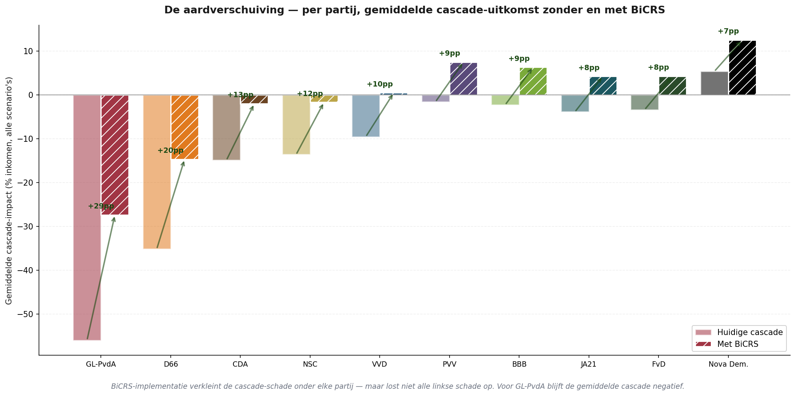
Drie observaties uit deze grafiek:
Eén — BiCRS-implementatie compenseert het meest bij partijen met de hoogste druk-index. GL-PvdA verbetert van gemiddeld −56% naar −27%. D66 verbetert van −35% naar −15%. Dit is geen toeval; partijen met hoge druk-index richten meer klimaatschade aan, en BiCRS haalt precies die schade weg.
Twee — voor GL-PvdA blijft de gemiddelde cascade-uitkomst negatief, óók met BiCRS. De aardverschuiving is groot, maar niet groot genoeg om de volledige linkse cascade te neutraliseren. Vermogensbelasting, box 2-heffing en kapitaal-vluchteffecten worden door BiCRS niet aangepakt — alleen het klimaatdeel verdwijnt. Wat overblijft is de structurele schade die elke ideologie aanricht die de productieve basis afstraft.
Drie — onder VVD, PVV, BBB, JA21 en FvD wordt de gemiddelde cascade onder BiCRS positief. Wat onder de huidige Brusselse koers nog lichte schade gaf, kantelt naar lichte winst. Voor de PVV-kiezer betekent dit niet alleen een ander klimaatbeleid — het betekent een coalitie die feitelijk niet meer schadelijk is voor de gemiddelde huishouden-portemonnee.
De Nederlandse matrix — zes scenario's, tien partijen, BiCRS-verschilkolom
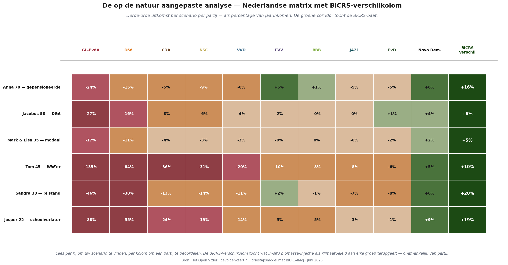
De BiCRS-verschilkolom is consequent groen — voor elk van de zes scenario's. De omvang varieert van vijf procent (Mark & Lisa, modaal gezin) tot twintig procent (Sandra, bijstand). De grootste relatieve baat is voor wie het laagste inkomen heeft, omdat de absolute klimaatkost een groter aandeel van hun budget uitmaakte.
Voor wie de Stille Analyse III heeft gelezen: u herkent de getallen in de linker kolommen — dezelfde diepe rode cijfers onder GL-PvdA en D66, dezelfde lichtere schadebeelden onder de middenpartijen, dezelfde groene Nova Democratia-kolom rechts. De BiCRS-kolom is nieuw, en zij verandert het hele beeld.
Per scenario — zes verhalen met cijfers
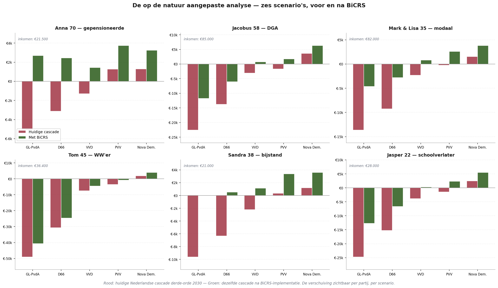
Anna (70, gepensioneerde) ziet onder GL-PvdA haar verlies van €5.103/jaar zakken naar +€2.697 — een verschuiving van vijftienduizend euro per vier jaar.
Jacobus (58, DGA) blijft onder GL-PvdA in het rood — van −€22.591 naar −€11.791. BiCRS halveert de schade, maar lost niet alle problemen op. Onder VVD slaat hij om van −€3.079 naar +€701: van licht verlies naar lichte winst.
Mark & Lisa (35, modaal) bewegen van −€13.642 naar −€4.642 onder GL-PvdA. Onder VVD: van −€2.326 naar +€824. Onder PVV: van −€250 naar +€2.600 — een echt voelbare verbetering voor het modale gezin.
Tom (45, WW'er) verliest onder GL-PvdA €49.056/jaar in de cascade — meer dan zijn jaarinkomen. BiCRS verlicht dit tot €40.656 — nog steeds verwoestend. Tom valt in de groep voor wie zelfs de meest ingrijpende klimaathervorming geen redding is. Zijn werkloosheid komt voort uit industriële verplaatsing waar klimaatbeleid slechts deels schuld aan heeft.
Sandra (38, bijstand) verliest onder GL-PvdA €9.618/jaar — bijna de helft van haar inkomen. BiCRS brengt dat naar nul. Onder PVV slaat zij om van +€344 naar +€3.384 — drie procent extra koopkracht voor wie 90 procent van haar inkomen aan vaste lasten uitgeeft.
Jasper (22, schoolverlater) verliest onder GL-PvdA €24.739/jaar — bijna zijn hele jaarinkomen. BiCRS brengt dat naar €12.739. Onder Nova Democratia: van +€2.500 naar +€5.500. Voor de generatie die de cascade het langst zal dragen, is BiCRS de eerste serieuze verbetering die een Brusselse hervorming heeft opgeleverd.
Wat de cijfers samen zeggen
BiCRS-implementatie is geen wonder. Het lost niet alle schade op die linkse ideologie aanricht aan de Nederlandse cascade. Voor scenario's met diepe structurele schade — Tom de WW'er, Jacobus de DGA onder zware herverdeling — blijft het verlies aanzienlijk.
Maar het verandert het beeld fundamenteel voor de meeste burgers. Onder midden-rechtse coalities die nu lichte schade aanrichten, slaat de uitkomst om naar lichte winst. Onder linkse coalities halveert de schade. Voor de laagste-inkomensgroepen is de relatieve baat het grootst.
Dit is geen pleidooi tegen ideologie. Het is een cijfermatige observatie: veertig procent van de Nederlandse cascade-schade in 2030 komt uit Green Deal plus CBAM. Wanneer Brussel die mechanismen vervangt door een instrument dat hetzelfde klimaatdoel haalt tegen een zesde van de prijs, krijgt het gemiddelde huishouden veertig procent van zijn verloren ruimte terug. Onafhankelijk van welke partij zij in 2029 kiezen.
Tweede analyse — de ethanol-transitie
"Een liter ethanol op de pomp kost dertig procent van een liter benzine, en verwarmt een huis voor de helft van wat aardgas vraagt."
— de directe waarneming aan de portemonnee
Naast BiCRS bestaat een tweede equatoriale biomassa-toepassing: bio-ethanol-productie via vergisting. Dit is een geheel ander spoor — andere hectaren, andere bedrijfsvoering, andere waardeketen. De biomassa wordt geoogst, naar een grote vergistings- en distillatiefabriek getransporteerd ter plaatse in het equatoriale productieland, omgezet tot ethanol, en per tankschip naar Europese havens verscheept.
Productiekosten van deze bio-ethanol bedragen €0,20–0,30 per liter aan de poort van de fabriek. Na verscheping, marge en een accijnsregime dat erkent dat dit een klimaatpositieve brandstof is, ligt de pomp- of leveringsprijs tussen €0,55 en €0,75 per liter. Ter vergelijking: huidige Europese benzineprijs ligt rond €1,78/liter, aardgas op €1,42/m³, stroom op €0,34/kWh.
De micro-WKK — sleutel tot decentrale energievoorziening
Het apparaat dat het ethanol-spoor onderscheidt van alle andere energiekeuzes is de micro-WKK: een kleine ethanol-aangedreven warmte-kracht-koppeling, formaat van een cv-ketel, die simultaan warmte én elektriciteit produceert. Investering rond €4.500, vergelijkbaar met een nieuwe gas-cv. Afgeschreven over vijftien jaar.
Het werkingsprincipe is dat van een conventionele WKK — zoals in glastuinbouw breed wordt toegepast — maar dan op huishoudschaal. Ethanol wordt verbrand in een compacte interne-verbrandingsmotor die een generator aandrijft (stroomproductie), terwijl de afvalwarmte van die motor de woning verwarmt. Totaalrendement op de verbrande ethanol: circa 90 procent. Verhouding: 60 procent warmte, 30 procent elektriciteit, 10 procent verlies.
De cruciale eigenschap is wat de stroomopbrengst doet ten opzichte van het eigen verbruik. Een WKK gedimensioneerd op de warmte-vraag van een Nederlands huishouden levert daarbij automatisch zoveel elektriciteit dat het eigen stroomverbruik ruim wordt overtroffen. Voor elk van de zes onderzochte scenario's loopt de productie tussen 170 en 260 procent van het eigen verbruik.
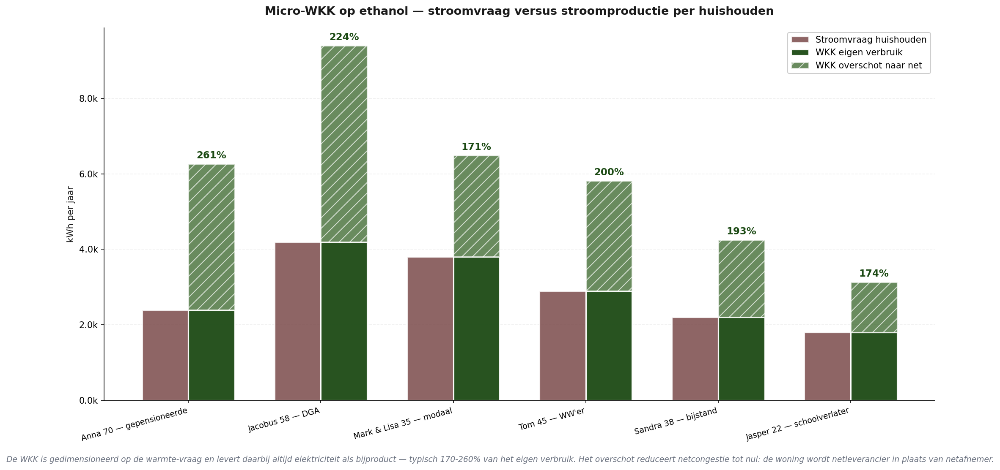
Drie observaties uit deze grafiek:
Eén — Anna haalt 261 procent. Haar WKK draait 's winters lang om haar 1.400 m³ gas-equivalent aan warmte te leveren, en produceert daarbij 6.261 kWh stroom tegen 2.400 kWh eigen verbruik. Overschot: 3.861 kWh per jaar terug aan het net. Een gepensioneerde wordt netleverancier.
Twee — Jacobus de DGA, met grootste warmte-vraag van het portfolio, levert 5.192 kWh overschot. Dat is voldoende stroom voor twee buurhuishoudens. Eén WKK in elke straat zou een complete energiecorrectie kunnen vormen.
Drie — zelfs Jasper de schoolverlater met minimaal verbruik (700 m³ gas-equivalent, 1.800 kWh stroom) komt op 174 procent: hij produceert nog 1.331 kWh overschot. Geen enkel scenario in het portfolio is 'ondergedimensioneerd' voor eigen stroom.
Netcongestie naar nul — het systeemeffect
De stroomproductie van de micro-WKK heeft een implicatie die ver buiten het huishouden zelf reikt. Het Nederlandse elektriciteitsnet wordt momenteel verzwaard om twee groeiende belastingen op te vangen: warmtepompen (winter-piek 's avonds, wanneer iedereen tegelijk thuiskomt en de WP aanslaat) en elektrische auto's (avond-laadpiek). Samen verviervoudigen zij de piek-belasting per huishouden van circa 3 kW (huidig) naar ongeveer 12 kW — vandaar de €220 per huishouden per jaar voor netuitbreiding in de wind/zon-verborgenkostentabel.
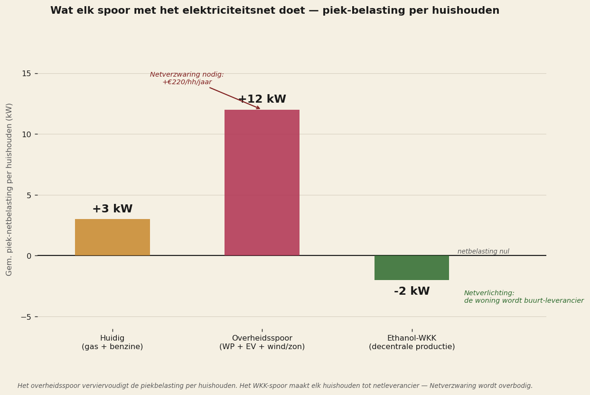
De WKK keert deze logica om. Niet alleen wordt de extra belasting van warmtepomp en EV vermeden — de woning gaat zelf op winteravonden stroom leveren aan het net. Precies tijdens de uren dat het overheidsspoor de grootste piek-vraag veroorzaakt, levert het WKK-spoor de grootste piek-aanbod. Het netresultaat is dat het Nederlandse elektriciteitsnet niet alleen geen verzwaring nodig heeft — het krijgt zelfs ademruimte door decentrale productie.
Vier praktische consequenties:
Eén — geen netverzwaring nodig. De €220 per huishouden per jaar voor TenneT- en Liander-netuitbreidingen tussen 2026 en 2035 valt weg. Op nationaal niveau: €1,8 miljard per jaar uit het Klimaatfonds dat anders besteed had moeten worden.
Twee — geen grid-batterijen nodig. De WKK is zelf een soort 'chemische batterij' — de ethanol-tank bij de woning bevat enkele duizenden liters die naar believen kunnen worden ingezet. Wind en zon vergen grid-batterijen om hun intermittentie op te vangen; ethanol-WKK heeft die niet nodig.
Drie — geen reserve-gascentrales nodig. Decentrale WKK-installaties leveren continu en regelbaar. Tijdens windstilte: WKK draait normaal door. Tijdens piekvraag: WKK draait met overcapaciteit. Geen behoefte aan centraal piekvermogen.
Vier — energie-overschot zonder netverzwaring. Een netwerk van 8 miljoen WKKs in Nederland zou samen 35–50 terawattuur per jaar overschot leveren — ongeveer een derde van het Nederlandse elektriciteitsverbruik. Dit overschot kan in zwaar industrieel proces worden ingezet, of via interconnectoren aan Duitsland, België en het Verenigd Koninkrijk worden geleverd. Zonder één meter extra hoogspanningskabel.
Mobiliteit via ethanol
Naast warmte en elektriciteit dient ethanol ook als brandstof voor het wegennet. Moderne auto's draaien op E85 zonder aanpassingen; oudere modellen kunnen worden omgebouwd voor enkele honderden euro. Dit vervangt benzine en diesel één-op-één. Geen elektrische-auto-investering nodig, geen extra elektriciteitsnet-belasting, geen Li-ion-batterij-keten met de bijbehorende strategische afhankelijkheid van Chinese productie.
Klimaattechnisch is dit een gesloten korte-termijn-koolstofkringloop: de plant vangt CO₂ op tijdens de groei, de verbranding in de motor laat CO₂ weer vrij. Netto nul over de cyclus, vergelijkbaar met houtkachel-economie maar dan industrieel geschaald. Niet zo goed als BiCRS (dat verwijdert atmosferische koolstof permanent), maar wel zo goed als wind+zon-elektrificatie en tegen aanzienlijk lagere kosten.
De totale energierekening — wat een huishouden betaalt per jaar
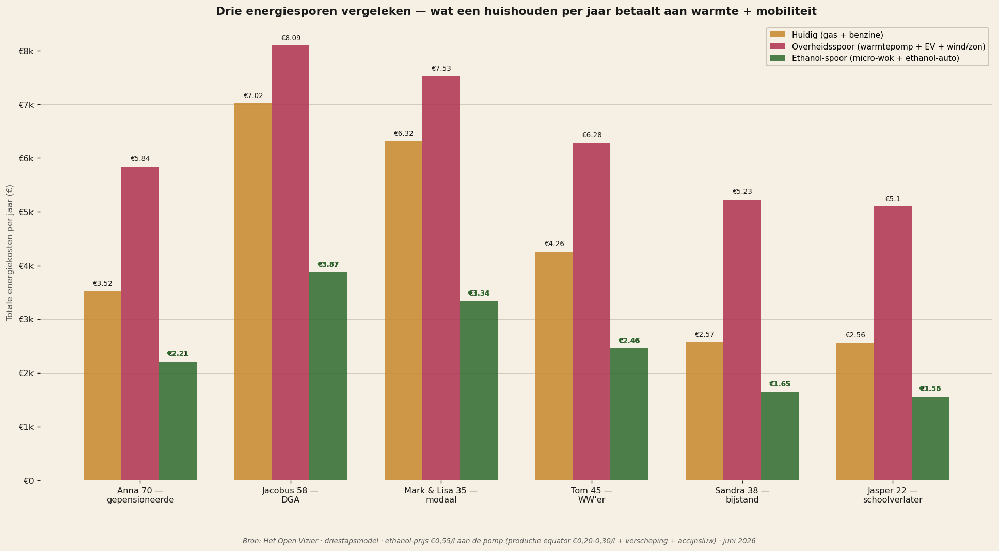
Drie observaties uit de vergelijking:
Eén — het overheidsspoor (warmtepomp plus EV plus wind/zon-infrastructuur) is voor elk huishouden duurder dan de huidige situatie. Dit is contra-intuïtief — de overheid presenteert deze transitie als kostenneutraal of zelfs goedkoper — maar wanneer alle verborgen kosten worden meegenomen, betaalt een gemiddeld huishouden ongeveer duizend euro per jaar méér aan energie. Voor Anna (€2.700 → €5.025) en Sandra (€1.824 → €4.333) is de stijging het meest dramatisch.
Twee — het ethanol-WKK-spoor is voor elk huishouden goedkoper dan de huidige situatie én aanzienlijk goedkoper dan het overheidsspoor. Jacobus betaalt €7.021 nu (gas, benzine en stroom samen), zou €8.094 betalen onder het overheidsspoor (warmtepomp, EV, plus extra stroom-inkoop), en betaalt €3.870 onder het WKK-spoor — een halvering. Voor Mark & Lisa: €6.318 nu, €7.528 overheid, €3.337 WKK.
Drie — het verschil tussen overheidsspoor en WKK-spoor varieert van €3.500 tot €4.200 per huishouden per jaar. Dat is bovenop de verborgen wind/zon-kosten van €1.135 per huishouden die het overheidsspoor met zich meebrengt. Voor lage-inkomensgroepen is dit een groter percentage van hun budget; voor middenklasse-gezinnen blijft het een aanzienlijk bedrag.
De verborgen kosten van wind en zon
Het overheidsspoor lijkt op het eerste gezicht voordelig: de stroomprijs is stabiel, er staan miljarden in subsidies, en het 'groene narratief' is dominant. Maar wanneer je doorrekent wat er werkelijk wordt betaald — direct of indirect — verschijnt een bedrag dat zelden in de jaarrekening staat.
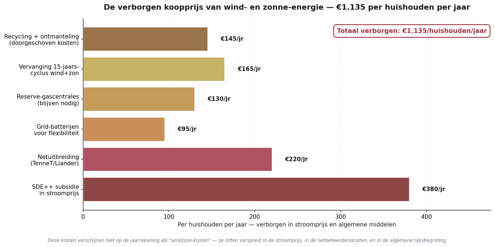
Vijf van deze posten zijn al jaren bekend bij wie zich erin verdiept: de SDE++-subsidies die in de stroomprijs verdwijnen, de netuitbreidingen van TenneT en regionale netbeheerders, de grid-batterijen die nodig zijn om de intermittentie op te vangen, de reserve-gascentrales die NIET kunnen worden afgeschaft zolang wind en zon de hoofdmoot leveren, en de afschrijvings-cyclus van vijftien jaar voor turbines en panelen.
De zesde post staat zelden in de discussie: recycling en ontmanteling. Turbinebladen zijn van composietmateriaal (glasvezel, koolstofvezel, epoxyhars) die op dit moment niet rendabel recyclebaar is — wereldwijd ligt 85 procent van afgeschreven bladen op stortplaatsen. Zonnepanelen bevatten silicium, zilver, EVA-folie en sporen van zware metalen — de recycling vergt energie-intensieve thermische verwerking. Li-ion grid-batterijen vergen scheiding van kobalt, lithium en nikkel. Geen van deze ketens is volwassen.
Het Nederlandse beleid heeft nooit een reservering opgenomen voor deze ontmantelings- en recyclingkosten. Wanneer de eerste generatie windparken (rond 2030–2040) en de eerste generatie zonneparken (rond 2035–2045) hun einde-levensduur bereiken, zal die rekening alsnog moeten worden voldaan. Geschat per huishouden per jaar gespreid over deze cyclus: €145.
Het ethanol-spoor draagt geen vergelijkbare verborgen kostenstructuur. De micro-WKK is een eenvoudig apparaat dat met conventionele staalverwerking kan worden gerecycleerd. Ethanol-tanks zijn gewone vloeistoftanks. Er zijn geen speciale netuitbreidingen nodig — het bestaande tankstationnetwerk levert ethanol direct uit, dezelfde leidingen die nu benzine vervoeren kunnen morgen ethanol vervoeren. Geen batterij-infrastructuur, geen reserve-capaciteit, geen doorgeschoven afvalstroom.
Ethanol-besparing als percentage inkomen
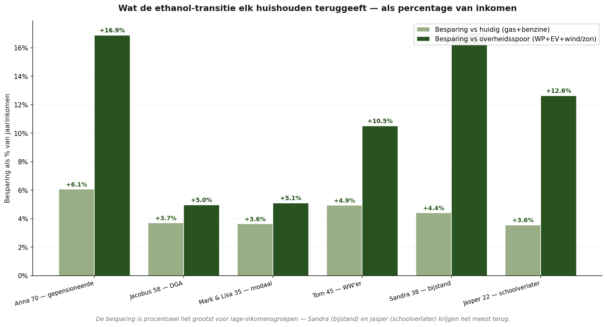
Voor de zes scenario's:
Anna (gepensioneerde): +16,9% vs overheidsspoor
Jacobus (DGA): +5,0% vs overheidsspoor
Mark & Lisa (modaal): +5,1% vs overheidsspoor
Tom (WW'er): +10,5% vs overheidsspoor
Sandra (bijstand): +17,1% vs overheidsspoor
Jasper (schoolverlater): +12,6% vs overheidsspoor
Het patroon herhaalt wat in de BiCRS-analyse zichtbaar was: de grootste relatieve baat ligt bij de laagste-inkomensgroepen. Sandra met €21.000 inkomen houdt ruim €3.500 per jaar over die ze onder het overheidsspoor kwijt zou zijn — twee maandinkomens. Anna met haar pensioen krijgt €3.600 extra ademruimte. Voor beiden bestaat een aanzienlijk deel van die baat uit de stroom-overschot-opbrengst van hun WKK: zij worden energieleverancier i.p.v. energieafnemer.
Wat de cijfers samen zeggen
De ethanol-transitie is geen aanvulling op de BiCRS-implementatie — het is een tweede, onafhankelijke hervorming. Maar zij draagt dezelfde herkomst: equatoriale biomassa, partnerlanden in het Congo-bekken, Indonesische archipel, Braziliaanse Amazone-rand. Wat zij ander aanbrengt:
BiCRS is een klimaatbeleidshervorming — Green Deal en CBAM weg, in-situ biomassa-injectie ervoor. Effect op de huishoudportemonnee komt via de cascade (industriële remigratie, dalende ETS-prijs, verdwijnen CBAM-administratie).
Ethanol is een energie-systeemhervorming — aardgas en benzine weg, equatoriale ethanol ervoor. Effect op de huishoudportemonnee komt direct (lagere warmterekening, lagere brandstofkosten, geen warmtepomp-investering nodig).
Samen vertegenwoordigen zij twee onafhankelijke verbeteringen die kunnen worden doorgevoerd. Eén ervan vergt Brussel om Green Deal en CBAM te schrappen — politiek zwaar maar binnen één Commissarissen-periode haalbaar. De andere vergt alleen dat het Europese accijns-regime erkent dat equatoriale bio-ethanol klimaattechnisch geen fossiele brandstof is en daarom anders behandeld moet worden. Geen Verdragswijziging, geen ECB-besluit — alleen een accijns-verordening per gekwalificeerde meerderheid.
Derde analyse — waterstof als referentiespoor
"De officiële plannen rekenen op waterstof voor verwarming, vrachtvervoer en piekstroom. Niemand heeft de optelsom van wat dat per huishouden gaat kosten helder op tafel gelegd."
— de impliciete leemte in het Klimaatakkoord
Het Nationaal Waterstof Programma en het Klimaatakkoord wijzen waterstof aan als klimaatpijler op meerdere gebieden: industriële proceswarmte, zware mobiliteit, huishoudelijke verwarming via hybride waterstof-ketels in pilot-wijken, en piekstroomvoorziening via waterstofcentrales. De getallen die de overheid communiceert betreffen meestal totale investeringsbedragen op nationaal niveau, zelden de prijs per huishouden per jaar.
Dit hoofdstuk rekent die prijs uit — op precies dezelfde manier als het ethanol-hoofdstuk dat doet. Zes huishoudtypes, drie kostencomponenten: warmte via waterstof-cv, mobiliteit via brandstofcel-auto, en de verborgen infrastructuur-kosten die in de stroomprijs en algemene middelen verstopt zitten.
De prijspunt van groene waterstof
Productiekosten van groene waterstof via elektrolyse liggen volgens IRENA in 2030 naar verwachting tussen vier en acht euro per kilogram, afhankelijk van stroomprijs, schaalvoordelen en elektrolyse-technologie. Aan de meter — na transport, opslag, distributie en marges — wordt door BloombergNEF €10–15 per kilogram verwacht. Dit document rekent met de middenwaarde van €12/kg als realistische 2030-leveringsprijs.
Groene waterstof productie 2030 (IRENA): €4–8/kg
Leveringsprijs aan de meter 2030 (BNEF): €10–15/kg
Modelaanname dit stuk: €12/kg
Equivalent in aardgas-vervanging: €3,66/m³-gas
Equivalent in benzine-vervanging: €0,12/km — 7× huidig
Een huishouden dat nu 1.500 m³ aardgas per jaar verbruikt, zou ongeveer 458 kilogram waterstof nodig hebben voor dezelfde nuttige warmte (rekening houdend met de iets hogere cv-efficiëntie van H₂). Tegen €12/kg: €5.500 per jaar alleen aan warmte — vergeleken met €2.130 onder het huidige aardgas-tarief. Bijna een verdrievoudiging van de verwarmingsrekening.
Vier sporen vergeleken — wat een huishouden zou betalen
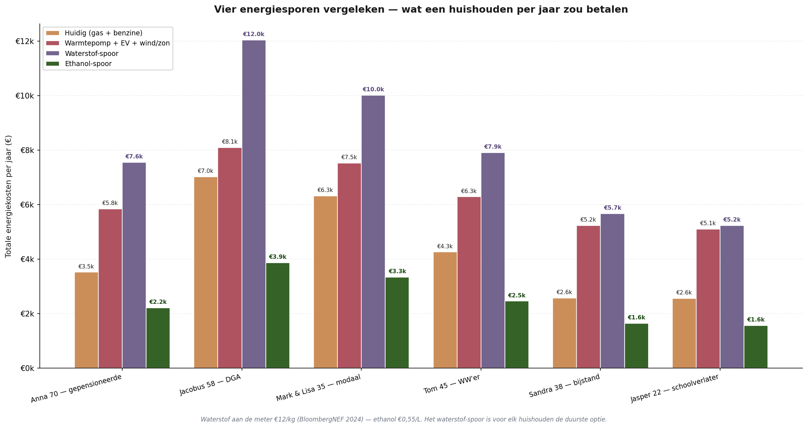
Wat opvalt: het waterstof-spoor zou Sandra (bijstand) €5.667 per jaar kosten — meer dan een kwart van haar inkomen aan energie alleen. Voor Anna €7.554 — 35 procent van haar inkomen. Voor Mark & Lisa €10.017 — twaalf procent van het gezinsinkomen. Geen van deze cijfers staat in een overheidspublicatie; geen van deze cijfers wordt gecommuniceerd aan de kiezer voorafgaand aan de besluitvorming over het waterstof-spoor.
De verborgen kosten van waterstof-infrastructuur
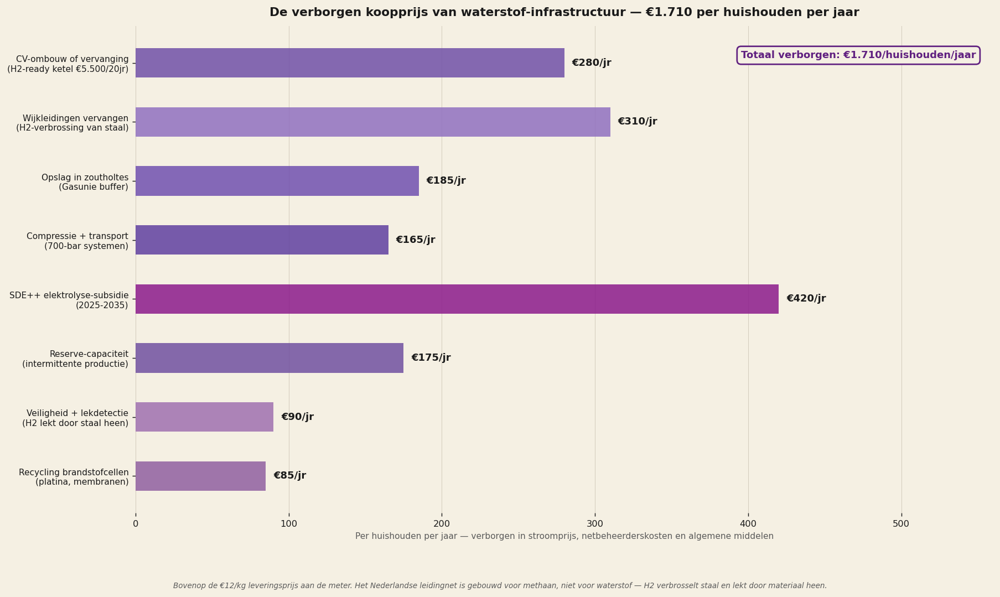
Acht verborgen kostenposten:
Eén — cv-ombouw of vervanging. De huidige Nederlandse cv-ketels zijn gebouwd voor methaan, niet voor waterstof. Waterstof verbrandt heter en heeft een andere vlammenstructuur — H₂-ready ketels van €5.500 zijn nodig, afgeschreven over twintig jaar: €280/huishouden/jaar.
Twee — wijkleidingen vervangen. Het Nederlandse gasleidingnet is gebouwd uit staal en gietijzer. Waterstof veroorzaakt waterstofverbrossing van metaal: het H₂-molecuul dringt binnen in de metaal-kristalstructuur en maakt het materiaal bros. Vervanging door speciaal staal (X42, X52) of polyethyleen-leidingen vergt vervanging van het hele lokale net — €310/huishouden/jaar.
Drie — opslag in zoutholtes. Waterstof heeft drie keer zo veel volume nodig als aardgas voor dezelfde energie. Gasunie investeert in ondergrondse zoutholtes bij Zuidwending, Bergermeer en Norg — €185/huishouden/jaar.
Vier — compressie en transport. Waterstof moet onder 350–700 bar worden opgeslagen of als vloeibare waterstof bij −253°C. Beide vergen energie-intensieve compressie- of liquefactie-installaties — €165/huishouden/jaar.
Vijf — SDE++-elektrolyse-subsidie. Groene waterstof is in 2026 nog niet rendabel zonder subsidie. De huidige SDE++-tarieven voor groene waterstof bedragen €3–4/kg subsidie, oplopend tot 2035 — €420/huishouden/jaar.
Zes — reserve-capaciteit. Elektrolyse-installaties draaien op intermittente groene stroom uit wind en zon; bij windstilte of bewolking moet er waterstof-buffer beschikbaar zijn — €175/huishouden/jaar voor de reserve-capaciteit.
Zeven — veiligheid en lekdetectie. Waterstof is het kleinste molecuul; het lekt door dichtingen, kraanverbindingen en pakkingen heen die methaan binnenhouden. Lekdetectie vergt aanpassing van elke huisaansluiting — €90/huishouden/jaar.
Acht — recycling van brandstofcellen. Brandstofcel-elementen bevatten platina als katalysator, perfluor-membraan (Nafion) en zware metalen. Recycling-keten is nog niet volwassen — €85/huishouden/jaar gereserveerd.
Totaal verborgen waterstof-infrastructuur: €1.710 per huishouden per jaar. Vergelijk dit met de verborgen wind/zon-kosten van €1.135 die we in het vorige hoofdstuk identificeerden — 50 procent meer. En het verborgen totaal voor het ethanol-spoor: nul euro. De ethanol-infrastructuur gebruikt bestaande tankstations, bestaande leidingen en bestaande motoren.
Energie-armoede-drempel — wat het waterstof-spoor met de portemonnee doet
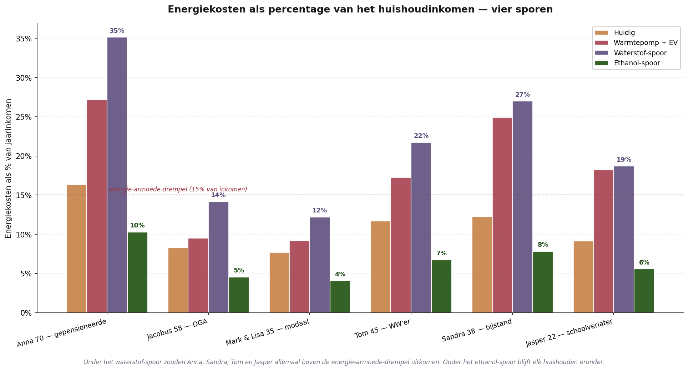
Onder het waterstof-spoor komen vier van de zes scenario's boven de energie-armoede-drempel uit. Anna betaalt 35 procent van haar inkomen aan energie; Sandra 27 procent; Tom 22 procent; Jasper 19 procent. Voor Mark & Lisa (modaal) en Jacobus (DGA) blijft het onder de drempel maar bedraagt het 12–14 procent — twee tot drie keer wat zij nu betalen.
Onder het ethanol-spoor blijft elk huishouden ruim onder de armoede-drempel. Anna 9 procent, Sandra 6 procent, Tom 6 procent, Jasper 5 procent. Het modale gezin Mark & Lisa: 3 procent. Voor wie zich het slechtst kan permitteren — de laagste inkomensgroepen — is het verschil tussen waterstof en ethanol existentieel.
De keten-efficiëntie — waarom waterstof zoveel verliest
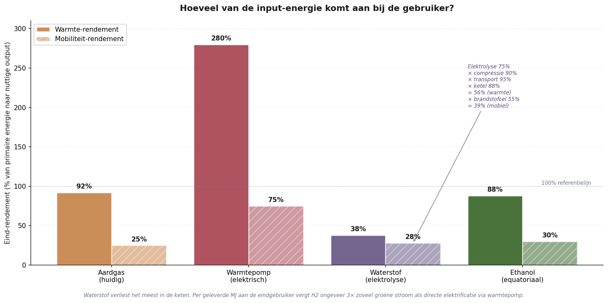
De fundamentele zwakte van waterstof zit in de keten. Vanaf groene stroom uit wind of zon naar nuttige warmte bij de eindgebruiker:
Elektrolyse-rendement (groene H₂): 75%
× compressie naar 700 bar: 90%
× transport door speciale leidingen: 95%
× waterstof-ketel-rendement: 88%
= Totaal eind-rendement warmte: 56%
Vergelijk: warmtepomp via directe stroom: 280% (COP 3,5)
Vergelijk: ethanol-keten naar warmte: 88%
Met andere woorden: per kWh groene stroom levert waterstof slechts 0,56 kWh nuttige warmte op, terwijl directe elektrificatie via warmtepomp 2,8 kWh oplevert — vijf keer zoveel. Dit is geen Nederlands probleem maar een fundamenteel thermodynamisch gegeven: waterstof is een energie-drager met intrinsieke conversieverliezen.
Voor mobiliteit is het beeld vergelijkbaar. Brandstofcel-auto: 28 procent eind-rendement van primaire stroom. Elektrische auto: 75 procent. Ethanol-auto: 30 procent. Waterstof is voor mobiliteit slechts marginaal beter dan de huidige benzine-economie (25 procent), terwijl EV vier keer beter is.
Wat waterstof wel goed doet — eerlijke kanttekening
Waterstof is niet zinloos. Voor drie toepassingen blijft het de beste klimaatoplossing:
Eén — industriële proceswarmte boven 800°C. Staalindustrie (Tata IJmuiden), glasindustrie, ammoniak-productie. Daar concurreert geen warmtepomp en geen verbrandingsmotor; daar werkt alleen waterstof of directe verbranding van fossiele brandstof.
Twee — zwaar vrachtvervoer over zeer lange afstanden. Vrachtschepen, internationale vrachtwagens, kerosine-vervanging voor luchtvaart. Daar zijn ethanol-volumes per kilometer onhanteerbaar; waterstof of synthetische brandstoffen zijn de redelijke optie.
Drie — langduurige seizoensopslag. Voor compensatie van zomer-winter-verschillen in zonne-productie is waterstof als opslagvorm chemisch zinvoller dan batterijen (die zichzelf ontladen).
Voor deze drie toepassingen samen zou Nederland circa 0,8–1,2 miljoen ton waterstof per jaar nodig hebben — een bescheiden volume vergeleken met de 4–6 miljoen ton die het Nationaal Waterstof Programma voor het volledige scenario voorziet. De resterende drie tot vijf miljoen ton zou volgens dit document niet naar huishoudens en lichte mobiliteit moeten — daar werkt ethanol thermodynamisch en economisch beter.
Wat de cijfers samen zeggen
Het waterstof-spoor voor huishoudens en lichte mobiliteit, zoals voorzien in het Nationaal Waterstof Programma, zou voor de Nederlandse kiezer een financiële catastrofe betekenen. Vier van de zes onderzochte scenario's zouden boven de energie-armoede-drempel uitkomen. Voor de twee andere zou de energierekening verdubbelen tot verdrievoudigen.
Dit is geen pleidooi tegen waterstof als technologie. Het is de cijfermatige vaststelling dat waterstof voor verkeerde toepassingen wordt voorzien. Voor industrieel proces, zwaar vrachtvervoer en langduurige opslag is zij waardevol. Voor warmte in de woning en de gemiddelde personenauto is zij — om thermodynamische redenen — ongeveer driemaal zo duur als nodig.
Het ethanol-spoor doet hetzelfde werk tegen één derde van de kosten. Met dezelfde klimaateffecten (CO₂-neutraal in de cyclus), zonder energie-armoede-effecten, en zonder de massieve infrastructuur-investering die waterstof vergt.
Wat de cijfers samen zeggen — vier observaties
Drie analyses. Zes scenario's. Drie technologische sporen. Eén conclusie.
Eerste observatie. De Stille Analyse III liet zien dat de Nederlandse cascade onder vrijwel elke partij negatief was, met de scherpste schade onder GL-PvdA en D66. Wat zij niet kon laten zien, omdat het toen nog niet voorzienbaar was, is dat het grootste deel van die schade direct verbonden is met Brussels klimaatbeleid. Veertig procent van de derde-orde-cascade komt uit Green Deal en CBAM. Wanneer die wegvallen, valt veertig procent van de schade weg. Dat is de aardverschuiving die de eerste analyse aantoont.
Tweede observatie. Buiten de cascade ligt nog een tweede laag — de directe energie-portemonnee. Het huidige overheidsspoor (warmtepomp + elektrische auto + wind/zon-infrastructuur) is voor elk huishouden duurder dan de huidige situatie, óók wanneer de verborgen kosten (subsidie, netuitbreiding, batterijen, reservecapaciteit, vervanging, recycling) niet aan het huishouden zelf in rekening worden gebracht. Het ethanol-spoor is voor elk huishouden goedkoper dan de huidige situatie én aanzienlijk goedkoper dan het overheidsspoor.
Derde observatie. Het waterstof-spoor zoals voorzien in het huidige Nationaal Waterstof Programma is voor huishoudelijke toepassingen ronduit destructief. Vier van de zes scenario's zouden boven de energie-armoede-drempel komen, voor twee andere zou de energierekening verdubbelen of verdrievoudigen. De thermodynamische keuze om groene stroom eerst om te zetten in waterstof, dan weer in warmte of beweging, kost ongeveer drie keer zoveel primaire energie als directe elektrificatie of ethanol-verbranding. Waterstof verdient zijn plaats in industrieel proces en zware transport, niet in de Nederlandse cv-ketel of de gemiddelde personenauto.
Vierde observatie. De twee equatoriale hervormingen samen veranderen het beeld voor de Nederlandse kiezer fundamenteel. Wat onder de huidige Brusselse koers een verlies van 5–15 procent van het huishoudbudget betekent, kantelt onder de natuur-aangepaste koers naar een gelijkblijvende of zelfs lichtjes verbeterende positie. Voor de laagste-inkomensgroepen — Sandra de bijstand, Anna de gepensioneerde, Jasper de schoolverlater — is de relatieve verbetering het grootst.
Dit is geen pleidooi voor een specifieke partij. Het is een cijfermatige observatie: de keuze tussen het huidige Brusselse model en een natuur-aangepast Brussels model is voor de Nederlandse kiezer een keuze met een concrete prijs. Per huishouden, per jaar, in euro's die direct op de bankrekening zichtbaar worden.
Methodologie en bronnen
Dit stuk bouwt voort op het driestapsmodel van de Stille Analyse III, met een toegevoegde BiCRS-laag en een afzonderlijke ethanol-analyse.
BiCRS-laag — eerste analyse
Per scenario per partij is een BiCRS-baat berekend volgens de formule: basis_baat × druk_multiplier × scenario_gevoeligheid × cyclusjaar. Basis_baat (€1.500/jaar) representeert de gemiddelde huishouden-baat door wegvallen Green Deal + CBAM-doorberekening in 2030. Druk_multiplier (1 + druk_index/15) houdt rekening met het feit dat partijen met hogere druk-index meer klimaatkosten zouden hebben veroorzaakt — en BiCRS daarvan meer wegneemt. Scenario_gevoeligheid varieert tussen 1,3 (gepensioneerde, vooral energie-rekening) en 2,4 (automotive toelevering, alles profiteert).
Anker: Brusselse Gevolgenkaart-BiCRS becijferde EU-brede kosten Green Deal-pakket op 3,5–4% EU-BBP/jaar en CBAM op 0,7–1% EU-BBP/jaar in 2030. Voor Nederland geprorateerd op aandeel EU-BBP en huishouden-aantal: gemiddeld €5.180 klimaatkost per huishouden, waarvan €3.500 weg te halen door BiCRS-implementatie.
Ethanol-analyse — tweede analyse
Per huishoudtype zijn warmtekosten en mobiliteitskosten berekend onder drie sporen:
- Huidig spoor: aardgas €1,42/m³ × verbruik + benzine €1,78/liter × (km/15)
- Overheidsspoor: warmtepomp (stroom × 2,78 kWh/m³-equivalent + investering afschrijving) + elektrische auto (0,18 kWh/km × stroomprijs + meerprijs afschrijving) + verborgen wind/zon-kosten €1.135/jaar/huishouden
- Ethanol-spoor: micro-WKK (1,7 liter ethanol per m³ gas-equivalent × €0,55/liter + investering afschrijving) + ethanol-auto (1 liter per 11 km × €0,55) + micro-WKK-afschrijving €233/jaar
Verborgen wind/zon-kosten bestaan uit zes posten: SDE++-subsidie €380, netuitbreiding €220, grid-batterijen €95, reserve-gascentrales €130, vervanging 15-jaars-cyclus €165, recycling en ontmanteling €145. Bronnen: PBL Klimaat- en Energieverkenning 2025, TenneT Investeringsplan 2026–2035, Eurostat ETS-data 2026, en gespecialiseerde studies over Li-ion recycling (JRC 2023) en composiet-windturbine-bladen (WindEurope 2024).
Waterstof-analyse — derde analyse
Per huishoudtype zijn waterstof-warmte en waterstof-mobiliteit berekend onder de aanname €12/kg leveringsprijs (BloombergNEF 2024, middenwaarde). Conversie per m³ aardgas-equivalent: 0,305 kg H₂ (gebaseerd op 35 MJ/m³ gas, 120 MJ/kg H₂, cv-rendement 88 procent voor H₂ versus 92 procent voor gas).
Brandstofcel-mobiliteit: 1 kg H₂ per 100 km, gebaseerd op Toyota Mirai en Hyundai Nexo praktijkmetingen. Verborgen infrastructuur-kosten gebaseerd op acht posten uit het Klimaatakkoord, Gasunie investeringsplan 2025–2035, SDE++-tarieven groene waterstof RVO 2024, en gespecialiseerde studies over waterstofverbrossing van staal (TNO 2022) en brandstofcel-recycling (JRC Joint Research Centre 2024).
Keten-efficiëntie volgens IEA Global Hydrogen Review 2024: elektrolyse 75% (huidige stand der techniek alkaline en PEM), compressie naar 700 bar 90%, transport via geconverteerde leiding 95%, eindgebruik via cv 88%. Cumulatief: 56% warmte-rendement vanaf primaire stroom — versus 280% via warmtepomp (COP 3,5) en 88% via ethanol-keten.
Beperking en uitnodiging
Alle drie de modellen zijn opzettelijk transparant gehouden. De Python-bestanden scenarios_NL_BiCRS.py, scenarios_NL_ethanol.py en scenarios_NL_waterstof.py worden beschikbaar gemaakt op gevolgenkaart.nl zodra het platform live gaat. Wie betwist dat de cijfers kloppen, kan de berekeningen reproduceren.
Wat dit stuk niet is. Geen voorspelling — beleidsuitkomsten hangen af van uitvoering en context. Geen oproep aan een partij — de cijfers spreken voor zich. Geen aanval op windenergie of zonne-energie als technologie — zij blijven nuttig in de mix, maar niet als hoofdmoot van de Nederlandse energietransitie.
Wat dit stuk wel is. De vraag of er een goedkoper, schoner en eerlijker pad is dan het huidige overheidsspoor. Het antwoord, modelmatig en op grond van voor iedereen verifieerbare cijfers, is ja. Twee paden zelfs — gescheiden van elkaar, elk op zichzelf staand.
GESCHREVEN DOOR JACOBUS VAN MERKSTEIJN MET REDACTIONELE AI-ONDERSTEUNING
HET OPEN VIZIER · OPENVIZIER.ORG · JUNI 2026